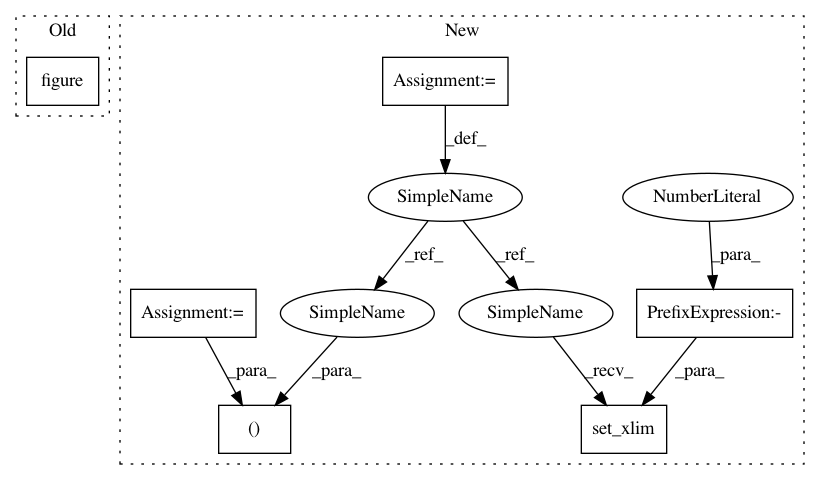

64be522285d5eeea4e3fb4c6df133984fc65b74e,examples/time_frequency/plot_compute_source_psd_epochs.py,,,#,22
Before Change
psd_avg /= n_epochs
freqs = stc.times // the frequencies are stored here
plt.figure()
plt.plot(freqs, psd_avg)
plt.xlabel("Freq (Hz)")
plt.ylabel("Power Spectral Density")
plt.show()
After Change
//////////////////////////////////////////////////////////////////////////////////////////////////////////////////////////////////////////////////////////////
// Visualize the entire spectrum:
fig, ax = plt.subplots()
ax.plot(freqs, psd_avg.mean(axis=0))
ax.set_xlabel("Freq (Hz)")
ax.set_xlim(stc.times[[0, -1]])
ax.set_ylabel("Power Spectral Density")
In pattern: SUPERPATTERN
Frequency: 3
Non-data size: 6
Instances
Project Name: mne-tools/mne-python
Commit Name: 64be522285d5eeea4e3fb4c6df133984fc65b74e
Time: 2018-09-08
Author: larson.eric.d@gmail.com
File Name: examples/time_frequency/plot_compute_source_psd_epochs.py
Class Name:
Method Name:
Project Name: matplotlib/matplotlib
Commit Name: d67550cee52588a9ff3cff49fbc45b0d878bca9a
Time: 2020-06-16
Author: tcaswell@gmail.com
File Name: lib/matplotlib/tests/test_patches.py
Class Name:
Method Name: test_large_arc
Project Name: matplotlib/matplotlib
Commit Name: 98ab2a07920610dae862d95363243572a84ea2c7
Time: 2020-06-16
Author: tcaswell@gmail.com
File Name: lib/matplotlib/tests/test_patches.py
Class Name:
Method Name: test_large_arc